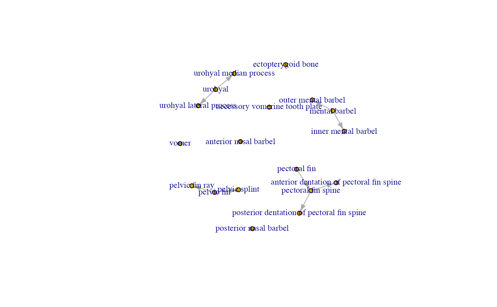
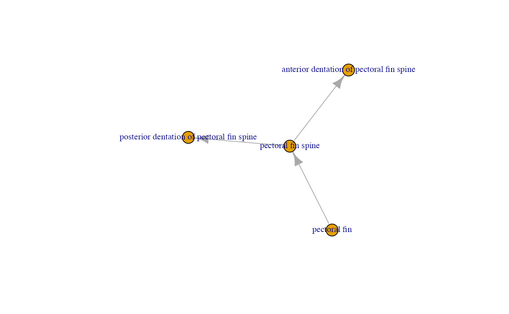
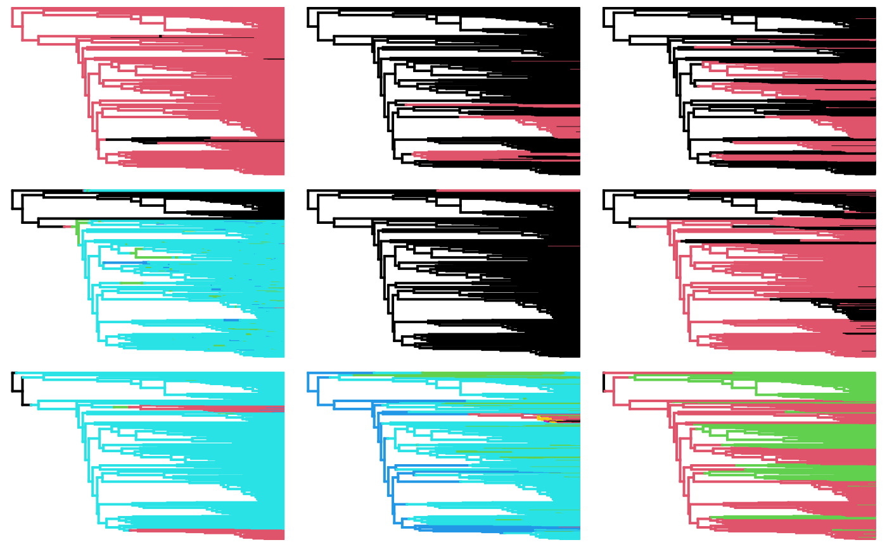

Phylogenetic Ancestral Reconstruction of Anatomy by Mapping Ontologies
The \(PARAMO\) pipeline requires three initial pieces of data: a character matrix, a dated phylogeny, and an anatomy ontology. Herein, we use a set of 19 characters from OntoTrace and a large-scale phylogeny of fishes from [@rabosky2018]. In this demonstration, we are interested in constructing the amalgamated characters for the three levels of amalgamation (=anatomical hierarchy): anatomical dependencies (ADs), body regions (BRs) and entire phenotype (EF). At the BR level, three main body types are considered – “dermatocranium”, “paired fins” and “external integument structures”.
STEP 1. Initial character matrix
We are going to retrieve our dataset from the Phenoscape Knowledgebase for demonstration purposes as our starting point. We are then going to reconstruct the history of these traits accounting for dependencies among them and amalgamating them according to trait type using the UBERON Anatomy Ontology.
# Define our traits
terms <- c("dermatocranium", "paired fin", "barbel")
# Define our taxon
taxon <- "Siluriformes"
# Apply pk_get_ontotrace_xml over all our traits in our taxon of interest, the Siluriformes and retain
# variable characters. If you want to return invariant characters instead, select variable_only=FALSE.
nex <- lapply(terms, pk_get_ontotrace_xml, taxon=taxon, variable_only=TRUE)
names(nex) <- terms
.m <- lapply(nex, pk_get_ontotrace)
# Merge together the resulting 3 matrices and remove non-trait data (OTU identifiers) and duplicated columns (if present)
m <- purrr::reduce(.m, full_join, by="taxa", suffix=c("", ".y"))
m <- dplyr::select_at(m, dplyr::vars(-contains("otu"))) # Removes otu data
siluriformes <- dplyr::select_at(m, vars(-contains(".y"))) # Removes duplicated columns
print_coverage(siluriformes)To save time, simply run the line below rather than the chunk above.
data(siluriformes)
print_coverage(siluriformes)## traits
## pectoral fin pectoral fin
## pectoral fin skeleton pectoral fin skeleton
## pectoral fin lepidotrichium pectoral fin lepidotrichium
## pectoral fin spine pectoral fin spine
## maxillary barbel maxillary barbel
## pelvic fin pelvic fin
## pelvic fin skeleton pelvic fin skeleton
## pelvic fin lepidotrichium pelvic fin lepidotrichium
## vomer vomer
## entopterygoid entopterygoid
## posterior nasal barbel posterior nasal barbel
## coronomeckelian coronomeckelian
## mental barbel mental barbel
## urohyal urohyal
## pectoral fin radial bone pectoral fin radial bone
## pectoral fin radial cartilage pectoral fin radial cartilage
## pectoral fin radial element pectoral fin radial element
## pectoral fin radial skeleton pectoral fin radial skeleton
## interopercle interopercle
## outer mental barbel outer mental barbel
## inner mental barbel inner mental barbel
## pelvic fin ray pelvic fin ray
## pelvic fin ray 1 pelvic fin ray 1
## urohyal lateral process urohyal lateral process
## lateropterygium lateropterygium
## infraorbital 4 infraorbital 4
## ectopterygoid bone ectopterygoid bone
## accessory vomerine tooth plate accessory vomerine tooth plate
## pelvic splint pelvic splint
## urohyal median process urohyal median process
## rostral plate rostral plate
## pectoral fin proximal radial bone pectoral fin proximal radial bone
## pectoral fin proximal radial cartilage pectoral fin proximal radial cartilage
## pectoral fin proximal radial element pectoral fin proximal radial element
## suprapreopercle suprapreopercle
## pelvic fin radial bone pelvic fin radial bone
## anterior dentation of pectoral fin spine anterior dentation of pectoral fin spine
## posterior dentation of pectoral fin spine posterior dentation of pectoral fin spine
## anterior nasal barbel anterior nasal barbel
## pectoral fin ray pectoral fin ray
## canal plate canal plate
## branched pectoral fin ray branched pectoral fin ray
## pelvic fin ray 6 pelvic fin ray 6
## pectoral fin distal radial bone pectoral fin distal radial bone
## pectoral fin distal radial cartilage pectoral fin distal radial cartilage
## pectoral fin distal radial element pectoral fin distal radial element
## pectoral fin proximal radial bone 1 pectoral fin proximal radial bone 1
## pectoral fin proximal radial bone 2 pectoral fin proximal radial bone 2
## pectoral fin proximal radial cartilage 1 pectoral fin proximal radial cartilage 1
## pectoral fin proximal radial cartilage 2 pectoral fin proximal radial cartilage 2
## pectoral fin proximal radial element 1 pectoral fin proximal radial element 1
## pectoral fin proximal radial element 2 pectoral fin proximal radial element 2
## pectoral fin distal radial bone 2 pectoral fin distal radial bone 2
## pectoral fin distal radial bone 3 pectoral fin distal radial bone 3
## pectoral fin distal radial cartilage 2 pectoral fin distal radial cartilage 2
## pectoral fin distal radial cartilage 3 pectoral fin distal radial cartilage 3
## pectoral fin distal radial element 2 pectoral fin distal radial element 2
## pectoral fin distal radial element 3 pectoral fin distal radial element 3
## antorbital antorbital
## pectoral fin proximal radial bone 3 pectoral fin proximal radial bone 3
## pectoral fin proximal radial cartilage 3 pectoral fin proximal radial cartilage 3
## pectoral fin proximal radial element 3 pectoral fin proximal radial element 3
## pectoral fin ray 1 pectoral fin ray 1
## palatine bone palatine bone
## preopercle horizontal limb preopercle horizontal limb
## anterior distal serration of pectoral fin spine anterior distal serration of pectoral fin spine
## pelvic fin radial element pelvic fin radial element
## pelvic fin radial skeleton pelvic fin radial skeleton
## pelvic radial cartilage pelvic radial cartilage
## coverage average
## pectoral fin 1114 0.996409336
## pectoral fin skeleton 1114 0.996409336
## pectoral fin lepidotrichium 1073 0.996272134
## pectoral fin spine 1064 0.996240602
## maxillary barbel 1027 0.998886414
## pelvic fin 993 0.986788618
## pelvic fin skeleton 993 0.986788618
## pelvic fin lepidotrichium 949 0.979915433
## vomer 828 0.924598269
## entopterygoid 796 0.936446174
## posterior nasal barbel 788 0.591152815
## coronomeckelian 750 0.936608558
## mental barbel 748 0.827445652
## urohyal 708 0.987270156
## pectoral fin radial bone 704 0.994318182
## pectoral fin radial cartilage 704 0.994318182
## pectoral fin radial element 704 0.994318182
## pectoral fin radial skeleton 704 0.994318182
## interopercle 682 0.998502994
## outer mental barbel 677 0.754098361
## inner mental barbel 622 0.717990276
## pelvic fin ray 583 0.967241379
## pelvic fin ray 1 581 0.967128028
## urohyal lateral process 563 0.899821109
## lateropterygium 536 0.941619586
## infraorbital 4 501 0.990000000
## ectopterygoid bone 435 0.647754137
## accessory vomerine tooth plate 412 0.207823961
## pelvic splint 399 0.478149100
## urohyal median process 369 0.839673913
## rostral plate 355 0.005633803
## pectoral fin proximal radial bone 314 0.987261146
## pectoral fin proximal radial cartilage 314 0.987261146
## pectoral fin proximal radial element 314 0.987261146
## suprapreopercle 309 0.770370370
## pelvic fin radial bone 304 0.009868421
## anterior dentation of pectoral fin spine 289 0.691244240
## posterior dentation of pectoral fin spine 284 0.867187500
## anterior nasal barbel 224 0.022321429
## pectoral fin ray 172 0.976744186
## canal plate 132 0.901515152
## branched pectoral fin ray 108 0.962962963
## pelvic fin ray 6 98 0.775510204
## pectoral fin distal radial bone 81 0.950617284
## pectoral fin distal radial cartilage 81 0.950617284
## pectoral fin distal radial element 81 0.950617284
## pectoral fin proximal radial bone 1 81 0.950617284
## pectoral fin proximal radial bone 2 81 0.950617284
## pectoral fin proximal radial cartilage 1 81 0.950617284
## pectoral fin proximal radial cartilage 2 81 0.950617284
## pectoral fin proximal radial element 1 81 0.950617284
## pectoral fin proximal radial element 2 81 0.950617284
## pectoral fin distal radial bone 2 80 0.950000000
## pectoral fin distal radial bone 3 80 0.950000000
## pectoral fin distal radial cartilage 2 80 0.950000000
## pectoral fin distal radial cartilage 3 80 0.950000000
## pectoral fin distal radial element 2 80 0.950000000
## pectoral fin distal radial element 3 80 0.950000000
## antorbital 78 0.974358974
## pectoral fin proximal radial bone 3 71 0.943661972
## pectoral fin proximal radial cartilage 3 71 0.943661972
## pectoral fin proximal radial element 3 71 0.943661972
## pectoral fin ray 1 68 0.941176471
## palatine bone 66 0.787878788
## preopercle horizontal limb 34 0.625000000
## anterior distal serration of pectoral fin spine 26 0.809523810
## pelvic fin radial element 25 0.120000000
## pelvic fin radial skeleton 25 0.120000000
## pelvic radial cartilage 25 0.120000000The table that prints out shows the number of taxa for which there is data in the KB ( coverage ) and the proportion of taxa ( average ) that have this trait present (all of these are binary, presence/absence characters).
This dataset is too big for our demonstration purposes. So let’s filter down to a smaller set of traits that will illustrate our process.
dat <- dplyr::select(siluriformes,"taxa",
"vomer", "accessory vomerine tooth plate", "ectopterygoid bone",
"mental barbel", "inner mental barbel", "outer mental barbel", "anterior nasal barbel", "posterior nasal barbel",
"urohyal", "urohyal lateral process", "urohyal median process",
"pectoral fin spine", "anterior dentation of pectoral fin spine", "posterior dentation of pectoral fin spine",
"pectoral fin",
"pelvic fin", "pelvic splint", "pelvic fin ray"
)
## Let's also clean up some of the species names to only include Genus and species (drop subspecies etc.)
dat$taxa <- unname(sapply(dat$taxa, function(x) paste(strsplit(x, split=" ")[[1]][1:2], collapse="_")))
head(dat)## taxa vomer accessory vomerine tooth plate
## 1 Acanthicus_hystrix 1 and 0 <NA>
## 2 Acanthobunocephalus_nicoi 0 <NA>
## 3 Acanthocleithron_chapini <NA> <NA>
## 4 Acentronichthys_leptos 1 <NA>
## 5 Acentronichthys_sp. 1 <NA>
## 6 Acrochordonichthys_ischnosoma 1 <NA>
## ectopterygoid bone mental barbel inner mental barbel outer mental barbel
## 1 <NA> 0 and 1 0 0
## 2 <NA> 1 <NA> <NA>
## 3 <NA> 1 1 1
## 4 0 <NA> <NA> <NA>
## 5 0 <NA> <NA> <NA>
## 6 1 <NA> <NA> <NA>
## anterior nasal barbel posterior nasal barbel urohyal urohyal lateral process
## 1 0 0 1 <NA>
## 2 NA <NA> 1 <NA>
## 3 NA <NA> 1 <NA>
## 4 NA 0 <NA> <NA>
## 5 NA 0 <NA> <NA>
## 6 NA <NA> 1 <NA>
## urohyal median process pectoral fin spine
## 1 <NA> 1
## 2 <NA> 1
## 3 <NA> 1
## 4 <NA> 1
## 5 <NA> 1
## 6 <NA> 1
## anterior dentation of pectoral fin spine
## 1 1 and 0
## 2 1
## 3 <NA>
## 4 <NA>
## 5 1
## 6 <NA>
## posterior dentation of pectoral fin spine pectoral fin pelvic fin
## 1 <NA> 1 1
## 2 <NA> 1 <NA>
## 3 1 1 1
## 4 <NA> 1 1
## 5 0 and 1 1 1
## 6 <NA> 1 <NA>
## pelvic splint pelvic fin ray
## 1 <NA> 1
## 2 <NA> <NA>
## 3 0 <NA>
## 4 <NA> 1
## 5 <NA> 1
## 6 <NA> <NA>Now let’s load in the Rabosky fish phylogeny and match it to the data
using treeplyr.
data(fishtree)
td <- make.treedata(fishtree, dat)
td## $phy
##
## Phylogenetic tree with 474 tips and 473 internal nodes.
##
## Tip labels:
## Synodontis_victoriae, Synodontis_acanthomias, Synodontis_zambezensis, Synodontis_njassae, Synodontis_sorex, Synodontis_clarias, ...
##
## Rooted; includes branch lengths.
##
## $dat
## # A tibble: 474 × 18
## vomer `accessory vomerine…` `ectopterygoid…` `mental barbel` `inner mental …`
## <fct> <fct> <fct> <fct> <fct>
## 1 NA NA NA 1 1
## 2 NA NA NA 1 1
## 3 NA NA NA 1 1
## 4 NA NA NA 1 1
## 5 NA NA NA 1 1
## 6 1 0 NA 1 1
## 7 NA NA NA 1 1
## 8 NA NA NA 1 1
## 9 NA NA NA 1 1
## 10 NA NA NA 1 1
## # … with 464 more rows, and 13 more variables: `outer mental barbel` <fct>,
## # `anterior nasal barbel` <int>, `posterior nasal barbel` <fct>,
## # urohyal <fct>, `urohyal lateral process` <fct>,
## # `urohyal median process` <fct>, `pectoral fin spine` <int>,
## # `anterior dentation of pectoral fin spine` <fct>,
## # `posterior dentation of pectoral fin spine` <fct>, `pectoral fin` <int>,
## # `pelvic fin` <fct>, `pelvic splint` <fct>, `pelvic fin ray` <fct>We want to learn about these traits, so we’re going to build a nice
data table to see what these traits are and their unique identifiers
using the KB API and rphenoscape function
pk_anatomical_detail.
traits <- colnames(td$dat)
anatomical_details <- lapply(traits, pk_anatomical_detail) # Query over traits and get anatomical details ## Warning: 'FUN' is deprecated.
## Use 'anatomy_term_info' instead.
## See help("Deprecated")
## Warning: 'FUN' is deprecated.
## Use 'anatomy_term_info' instead.
## See help("Deprecated")
## Warning: 'FUN' is deprecated.
## Use 'anatomy_term_info' instead.
## See help("Deprecated")
## Warning: 'FUN' is deprecated.
## Use 'anatomy_term_info' instead.
## See help("Deprecated")
## Warning: 'FUN' is deprecated.
## Use 'anatomy_term_info' instead.
## See help("Deprecated")
## Warning: 'FUN' is deprecated.
## Use 'anatomy_term_info' instead.
## See help("Deprecated")
## Warning: 'FUN' is deprecated.
## Use 'anatomy_term_info' instead.
## See help("Deprecated")
## Warning: 'FUN' is deprecated.
## Use 'anatomy_term_info' instead.
## See help("Deprecated")
## Warning: 'FUN' is deprecated.
## Use 'anatomy_term_info' instead.
## See help("Deprecated")
## Warning: 'FUN' is deprecated.
## Use 'anatomy_term_info' instead.
## See help("Deprecated")
## Warning: 'FUN' is deprecated.
## Use 'anatomy_term_info' instead.
## See help("Deprecated")
## Warning: 'FUN' is deprecated.
## Use 'anatomy_term_info' instead.
## See help("Deprecated")
## Warning: 'FUN' is deprecated.
## Use 'anatomy_term_info' instead.
## See help("Deprecated")
## Warning: 'FUN' is deprecated.
## Use 'anatomy_term_info' instead.
## See help("Deprecated")
## Warning: 'FUN' is deprecated.
## Use 'anatomy_term_info' instead.
## See help("Deprecated")
## Warning: 'FUN' is deprecated.
## Use 'anatomy_term_info' instead.
## See help("Deprecated")
## Warning: 'FUN' is deprecated.
## Use 'anatomy_term_info' instead.
## See help("Deprecated")
## Warning: 'FUN' is deprecated.
## Use 'anatomy_term_info' instead.
## See help("Deprecated")
char_info <- list()
char_info$ID <- traits
char_info$definition <- sapply(anatomical_details, function(x) x$definition) # Extract definitions
char_info$STATE_0 <- rep(0, length(traits)) # All ontotrace matrices are binary presence/absence
char_info$STATE_1 <- rep(1, length(traits)) # All ontotrace matrices are binary presence/absence
char_info$IRI <- sapply(anatomical_details, function(x) x$id) # Extra a unique URL identifier called an "IRI"
char_info$IRI <- gsub("http://purl.obolibrary.org/obo/", "", char_info$IRI)
char_info$IRI <- gsub("_", ":", char_info$IRI)
char_info <- data.frame(char_info)
as_tibble(char_info)## # A tibble: 18 × 5
## ID definition STATE_0 STATE_1 IRI
## <chr> <chr> <dbl> <dbl> <chr>
## 1 vomer The triangul… 0 1 UBER…
## 2 accessory vomerine tooth plate Dermal bone … 0 1 UBER…
## 3 ectopterygoid bone A palatal bo… 0 1 UBER…
## 4 mental barbel Barbel that … 0 1 UBER…
## 5 inner mental barbel Mental barbe… 0 1 UBER…
## 6 outer mental barbel Mental barbe… 0 1 UBER…
## 7 anterior nasal barbel Barbel that … 0 1 UBER…
## 8 posterior nasal barbel Barbel that … 0 1 UBER…
## 9 urohyal Tendon bone … 0 1 UBER…
## 10 urohyal lateral process Process that… 0 1 UBER…
## 11 urohyal median process Process that… 0 1 UBER…
## 12 pectoral fin spine Pectoral-fin… 0 1 UBER…
## 13 anterior dentation of pectoral fin spine Process that… 0 1 UBER…
## 14 posterior dentation of pectoral fin spine Process that… 0 1 UBER…
## 15 pectoral fin Paired fin t… 0 1 UBER…
## 16 pelvic fin Paired fin l… 0 1 UBER…
## 17 pelvic splint Dermal bone … 0 1 UBER…
## 18 pelvic fin ray Soft ray tha… 0 1 UBER…We can construct a heat map that is organized by the semantic similarity of the traits to visualize our dataset. The phylogeny is displayed on the left side, and a tree of traits is on the top.
njt <- makeTraitTree(td, skip=NULL)
njt <- root(multi2di(njt), grep("barbel", njt$tip.label))
ontologyHeatMap(td, njt, start=1, cex=0.25)## Warning in recode.numeric(td$dat[[x]], `0 and 1` = 0.5, `1 and 0` = 0.5, : NAs
## introduced by coercion
## Warning in recode.numeric(td$dat[[x]], `0 and 1` = 0.5, `1 and 0` = 0.5, : NAs
## introduced by coercion
## Warning in recode.numeric(td$dat[[x]], `0 and 1` = 0.5, `1 and 0` = 0.5, : NAs
## introduced by coercion## ***************************************************************
## * Note: *
## * force.ultrametric does not include a formal method to *
## * ultrametricize a tree & should only be used to coerce *
## * a phylogeny that fails is.ultramtric due to rounding -- *
## * not as a substitute for formal rate-smoothing methods. *
## ***************************************************************
## NULLSome of our taxa are really data poor, so let’s filter them out and deal with a smaller, more manageable dataset by excluding all taxa that don’t have at least 40% of the traits as data.
tdf <- filter_coverage(td, traits=0, taxa=0.4)
njt <- makeTraitTree(tdf, skip=NULL)
njt <- root.phylo(njt, grep("barbel", njt$tip.label))
ontologyHeatMap(tdf, njt, start=1, cex=0.25)## Warning in recode.numeric(td$dat[[x]], `0 and 1` = 0.5, `1 and 0` = 0.5, : NAs
## introduced by coercion
## Warning in recode.numeric(td$dat[[x]], `0 and 1` = 0.5, `1 and 0` = 0.5, : NAs
## introduced by coercion
## Warning in recode.numeric(td$dat[[x]], `0 and 1` = 0.5, `1 and 0` = 0.5, : NAs
## introduced by coercion## ***************************************************************
## * Note: *
## * force.ultrametric does not include a formal method to *
## * ultrametricize a tree & should only be used to coerce *
## * a phylogeny that fails is.ultramtric due to rounding -- *
## * not as a substitute for formal rate-smoothing methods. *
## ***************************************************************
## NULLNext, we want to identify the dependencies in our traits by using
rphenoscape::pa_dep_matrix, which returns a
presence-absence dependency matrix when provided a list of terms. In
other words, it returns which traits depend on the presence of another
trait. This will be key information for building our evolutionary
models, as not considering it can result in impossible ancestral state
reconstructions and can also help the pseudoreplication that occurs when
considering non-independent characters in phylogenetic analyses.
dep.mat <- pa_dep_matrix(gsub("N:", "N_", paste0("http://purl.obolibrary.org/obo/", char_info$IRI, sep="")), .names="label", preserveOrder=TRUE)
diag(dep.mat) <- NA
G1 <- igraph::graph_from_adjacency_matrix(remove_indirect(t(as.matrix(dep.mat))))
con.comp <- igraph::components(G1, "weak") # Organizes the subgraphs within our graph and allows us to pick out connected pieces
plot(G1, vertex.size=5, edge.arrow.size=0.5, vertex.label.cex=0.75)
pf.group <- con.comp$membership["pectoral fin"] ## Which group contains "pectoral fin"
pf.Graph <- igraph::induced_subgraph(G1, which(con.comp$membership==pf.group)) ## Pick out the subgraph with "pectoral fin"
plot(pf.Graph, vertex.label.cex=0.75) In the dependency graph above, for example, you can see that the presence of the pectoral fin spine is dependent on the presence of the pectoral fin.
Now we can build in our dependencies into our evolutionary models by amalgamating characters based on their dependency structure (pulled from the graph).
amal.deps <- amalgamate_deps(dep.mat) ## Create an object of transition matrices for the amalgamated characters
td.comb <- recode_traits(tdf, amal.deps) ## Recode the original dataset according to the character states of the new, amalgamated characters (with Hidden states)If the above code didn’t work for you, you can catch up by loading
this dataset from the scate-shortcourse package
data(td.comb)We can reconstruct our stochastic character maps by first fitting the
model in the R package corHMM, then using the model fit to
generate stochastic maps in phytools. In the workshop, we
will do a Julia Child-style switch-a-roo and analyze completed analyses,
rather than actually running these, because they will take too long.
## WARNING: VERY TIME CONSUMING (~15-30 minutes)
corhmm.fits <- amalgamated_fits_corHMM(td.comb, amal.deps)
data(corhmm.fits)
trees <- amalgamated_simmaps_phytools(corhmm.fits, nsim=2) # Create 2 stochastic character maps per character## make.simmap is sampling character histories conditioned on
## the transition matrix
##
## Q =
## 0 1
## 0 -0.015181962 0.015181962
## 1 0.000439188 -0.000439188
## (specified by the user);
## and (mean) root node prior probabilities
## pi =
## 0 1
## 0.08538509 0.91461491## Done.## make.simmap is sampling character histories conditioned on
## the transition matrix
##
## Q =
## 0 1
## 0 -0.001262416 0.001262416
## 1 0.005320256 -0.005320256
## (specified by the user);
## and (mean) root node prior probabilities
## pi =
## 0 1
## 0.98917784 0.01082216## Done.## make.simmap is sampling character histories conditioned on
## the transition matrix
##
## Q =
## 0 1
## 0 -0.005602360 0.005602360
## 1 0.001354655 -0.001354655
## (specified by the user);
## and (mean) root node prior probabilities
## pi =
## 0 1
## 0.998542608 0.001457392## Done.## make.simmap is sampling character histories conditioned on
## the transition matrix
##
## Q =
## 0 1 2 3 4 5
## 0 -0.001580976 0.000000000 0.000000000 0.000000000 0.001580976 0.000000000
## 1 0.000000000 -0.001580976 0.000000000 0.000000000 0.000000000 0.001580976
## 2 0.000000000 0.000000000 -0.001580976 0.000000000 0.000000000 0.000000000
## 3 0.000000000 0.000000000 0.000000000 -0.001580976 0.000000000 0.000000000
## 4 0.000000000 0.000000000 0.000000000 0.000000000 -0.618379378 0.323162692
## 5 0.000000000 0.000000000 0.000000000 0.000000000 0.003743554 -0.298960240
## 6 0.000000000 0.000000000 0.000000000 0.000000000 0.007070156 0.000000000
## 7 0.000000000 0.000000000 0.000000000 0.000000000 0.000000000 0.007070156
## 6 7
## 0 0.000000000 0.000000000
## 1 0.000000000 0.000000000
## 2 0.001580976 0.000000000
## 3 0.000000000 0.001580976
## 4 0.295216686 0.000000000
## 5 0.000000000 0.295216686
## 6 -0.330232848 0.323162692
## 7 0.003743554 -0.010813710
## (specified by the user);
## and (mean) root node prior probabilities
## pi =
## 0 1 2 3 4 5
## 1.000000e+00 7.655106e-09 1.385522e-08 1.179111e-09 2.391490e-08 5.143241e-11
## 6 7
## 9.325065e-11 1.211850e-12## Done.## make.simmap is sampling character histories conditioned on
## the transition matrix
##
## Q =
## 0 1
## 0 -0.0007914947 0.0007914947
## 1 0.0000000000 0.0000000000
## (specified by the user);
## and (mean) root node prior probabilities
## pi =
## 0 1
## 1.000000e+00 4.487579e-08## Done.## make.simmap is sampling character histories conditioned on
## the transition matrix
##
## Q =
## 0 1
## 0 -0.005096552 0.005096552
## 1 0.002356203 -0.002356203
## (specified by the user);
## and (mean) root node prior probabilities
## pi =
## 0 1
## 0.8156332 0.1843668## Done.## make.simmap is sampling character histories conditioned on
## the transition matrix
##
## Q =
## 0 1 2 3 4 5
## 0 -0.2422633 0.0000000 0.0000000 0.0000000 0.2422632522 0.0000000000
## 1 0.0000000 -0.2422633 0.0000000 0.0000000 0.0000000000 0.2422632522
## 2 0.0000000 0.0000000 -0.2422633 0.0000000 0.0000000000 0.0000000000
## 3 0.0000000 0.0000000 0.0000000 -0.2422633 0.0000000000 0.0000000000
## 4 0.0000000 0.0000000 0.0000000 0.0000000 -0.0075404502 0.0000000000
## 5 0.0000000 0.0000000 0.0000000 0.0000000 0.0004123124 -0.0079527625
## 6 0.0000000 0.0000000 0.0000000 0.0000000 0.0004200246 0.0000000000
## 7 0.0000000 0.0000000 0.0000000 0.0000000 0.0000000000 0.0004200246
## 6 7
## 0 0.0000000000 0.000000000
## 1 0.0000000000 0.000000000
## 2 0.2422632522 0.000000000
## 3 0.0000000000 0.242263252
## 4 0.0075404502 0.000000000
## 5 0.0000000000 0.007540450
## 6 -0.0004200246 0.000000000
## 7 0.0004123124 -0.000832337
## (specified by the user);
## and (mean) root node prior probabilities
## pi =
## 0 1 2 3 4 5
## 6.343138e-19 6.397440e-03 3.236837e-17 4.926197e-01 4.868857e-11 1.180867e-02
## 6 7
## 2.016923e-09 4.891742e-01## Done.## make.simmap is sampling character histories conditioned on
## the transition matrix
##
## Q =
## 0 1 10 11 12
## 0 -0.0002936557 0.0000000000 0.0000000000 0.0000000000 0.000000000
## 1 0.0000000000 -0.0002936557 0.0000000000 0.0000000000 0.000000000
## 10 0.0000000000 0.0000000000 -0.0002936557 0.0000000000 0.000000000
## 11 0.0000000000 0.0000000000 0.0000000000 -0.0002936557 0.000000000
## 12 0.0000000000 0.0000000000 0.0000000000 0.0000000000 -0.045575315
## 13 0.0000000000 0.0000000000 0.0000000000 0.0000000000 0.000000000
## 14 0.0000000000 0.0000000000 0.0000000000 0.0000000000 0.006548259
## 15 0.0000000000 0.0000000000 0.0000000000 0.0000000000 0.000000000
## 2 0.2297699449 0.0000000000 0.0000000000 0.0000000000 0.000000000
## 3 0.0000000000 0.2297699449 0.0000000000 0.0000000000 0.000000000
## 4 0.0000000000 0.0000000000 0.2297699449 0.0000000000 0.000000000
## 5 0.0000000000 0.0000000000 0.0000000000 0.2297699449 0.000000000
## 6 0.0000000000 0.0000000000 0.0000000000 0.0000000000 0.229769945
## 7 0.0000000000 0.0000000000 0.0000000000 0.0000000000 0.000000000
## 8 0.0000000000 0.0000000000 0.0000000000 0.0000000000 0.000000000
## 9 0.0000000000 0.0000000000 0.0000000000 0.0000000000 0.000000000
## 13 14 15 2 3
## 0 0.000000000 0.00000000 0.000000000 0.0002936557 0.0000000000
## 1 0.000000000 0.00000000 0.000000000 0.0000000000 0.0002936557
## 10 0.000000000 0.00000000 0.000000000 0.0000000000 0.0000000000
## 11 0.000000000 0.00000000 0.000000000 0.0000000000 0.0000000000
## 12 0.024642662 0.02063900 0.000000000 0.0000000000 0.0000000000
## 13 -0.020932653 0.00000000 0.020638998 0.0000000000 0.0000000000
## 14 0.000000000 -0.03148458 0.024642662 0.0000000000 0.0000000000
## 15 0.006548259 0.00000000 -0.006841915 0.0000000000 0.0000000000
## 2 0.000000000 0.00000000 0.000000000 -0.7412377583 0.0000000000
## 3 0.000000000 0.00000000 0.000000000 0.0000000000 -0.7412377583
## 4 0.000000000 0.00000000 0.000000000 0.0000000000 0.0000000000
## 5 0.000000000 0.00000000 0.000000000 0.0000000000 0.0000000000
## 6 0.000000000 0.00000000 0.000000000 0.3763825953 0.0000000000
## 7 0.229769945 0.00000000 0.000000000 0.0000000000 0.3763825953
## 8 0.000000000 0.22976994 0.000000000 0.0000000000 0.0000000000
## 9 0.000000000 0.00000000 0.229769945 0.0000000000 0.0000000000
## 4 5 6 7 8
## 0 0.0000000000 0.0000000000 0.0000000000 0.0000000000 0.0000000000
## 1 0.0000000000 0.0000000000 0.0000000000 0.0000000000 0.0000000000
## 10 0.0002936557 0.0000000000 0.0000000000 0.0000000000 0.0000000000
## 11 0.0000000000 0.0002936557 0.0000000000 0.0000000000 0.0000000000
## 12 0.0000000000 0.0000000000 0.0002936557 0.0000000000 0.0000000000
## 13 0.0000000000 0.0000000000 0.0000000000 0.0002936557 0.0000000000
## 14 0.0000000000 0.0000000000 0.0000000000 0.0000000000 0.0002936557
## 15 0.0000000000 0.0000000000 0.0000000000 0.0000000000 0.0000000000
## 2 0.0000000000 0.0000000000 0.5114678135 0.0000000000 0.0000000000
## 3 0.0000000000 0.0000000000 0.0000000000 0.5114678135 0.0000000000
## 4 -0.7412377583 0.0000000000 0.0000000000 0.0000000000 0.5114678135
## 5 0.0000000000 -0.7412377583 0.0000000000 0.0000000000 0.0000000000
## 6 0.0000000000 0.0000000000 -0.6514341999 0.0246426622 0.0206389975
## 7 0.0000000000 0.0000000000 0.0000000000 -0.6267915377 0.0000000000
## 8 0.3763825953 0.0000000000 0.0065482591 0.0000000000 -0.6373434615
## 9 0.0000000000 0.3763825953 0.0000000000 0.0065482591 0.0000000000
## 9
## 0 0.0000000000
## 1 0.0000000000
## 10 0.0000000000
## 11 0.0000000000
## 12 0.0000000000
## 13 0.0000000000
## 14 0.0000000000
## 15 0.0002936557
## 2 0.0000000000
## 3 0.0000000000
## 4 0.0000000000
## 5 0.5114678135
## 6 0.0000000000
## 7 0.0206389975
## 8 0.0246426622
## 9 -0.6127007993
## (specified by the user);
## and (mean) root node prior probabilities
## pi =
## 0 1 10 11 12 13
## 8.390665e-07 6.130776e-14 1.046516e-06 7.638700e-14 2.969643e-01 9.079284e-08
## 14 15 2 3 4 5
## 3.631342e-01 1.110233e-07 4.616034e-02 2.598839e-09 5.705092e-02 3.209243e-09
## 6 7 8 9
## 1.062751e-01 3.240113e-08 1.304130e-01 3.975679e-08## Done.## make.simmap is sampling character histories conditioned on
## the transition matrix
##
## Q =
## 0 1 2 3 4 5
## 0 -0.8152564 0.0000000 0.0000000 0.0000000 0.8152564 0.000000000
## 1 0.0000000 -0.8152564 0.0000000 0.0000000 0.0000000 0.815256398
## 2 0.0000000 0.0000000 -0.8152564 0.0000000 0.0000000 0.000000000
## 3 0.0000000 0.0000000 0.0000000 -0.8152564 0.0000000 0.000000000
## 4 0.0000000 0.0000000 0.0000000 0.0000000 -3.1339064 3.127180986
## 5 0.0000000 0.0000000 0.0000000 0.0000000 0.0000000 -0.006725387
## 6 0.0000000 0.0000000 0.0000000 0.0000000 0.0000000 0.000000000
## 7 0.0000000 0.0000000 0.0000000 0.0000000 0.0000000 0.000000000
## 6 7
## 0 0.000000000 0.000000000
## 1 0.000000000 0.000000000
## 2 0.815256398 0.000000000
## 3 0.000000000 0.815256398
## 4 0.006725387 0.000000000
## 5 0.000000000 0.006725387
## 6 -3.127180986 3.127180986
## 7 0.000000000 0.000000000
## (specified by the user);
## and (mean) root node prior probabilities
## pi =
## 0 1 2 3 4 5
## 2.507703e-01 2.507703e-01 2.791046e-08 2.791046e-08 2.492219e-01 2.492375e-01
## 6 7
## 4.496398e-08 4.496679e-08## Done.We can plot these simmap trees immediately and see what it looks like, we will do this again shortly with prettier labeling and colors.
par(mfrow=c(3,3))
for(i in 1:length(trees)){
states <- ncol(corhmm.fits[[i]]$index.mat)
phytools::plotSimmap(trees[[i]][[1]], ftype="off")
}## no colors provided. using the following legend:
## 0 1
## "black" "#DF536B"## no colors provided. using the following legend:
## 0 1
## "black" "#DF536B"## no colors provided. using the following legend:
## 0 1
## "black" "#DF536B"## no colors provided. using the following legend:
## 0 4 5 6 7
## "black" "#DF536B" "#61D04F" "#2297E6" "#28E2E5"## no colors provided. using the following legend:
## 0 1
## "black" "#DF536B"## no colors provided. using the following legend:
## 0 1
## "black" "#DF536B"## no colors provided. using the following legend:
## 3 4 5 6 7
## "black" "#DF536B" "#61D04F" "#2297E6" "#28E2E5"## no colors provided. using the following legend:
## 0 12 13 14 15 2 6
## "black" "#DF536B" "#61D04F" "#2297E6" "#28E2E5" "#CD0BBC" "#F5C710"## no colors provided. using the following legend:
## 4 5 7
## "black" "#DF536B" "#61D04F"
Our next step is to aggregate the traits by their trait types. This part is not quite done by the phenoscape API, so we’re going to interact directly with the UBERON ontology. In the future, this will not be necessary. To construct manually, you simply need to provide a list of how you want the traits aggregated.
# let's modify our character info to drop dependent states and match our new amalgamated characters
char_info_comb <- dropDependentTraits(char_info, dep.mat, td.comb)
data(UBERON)
BR_names <- c("dermatocranium", "paired fin", "external integument structure")
EF_names <- c("anatomical structure")
BR <- RAC_query(char_info_comb, UBERON, BR_names)## Warning: 'FUN' is deprecated.
## Use 'get_term_iri' instead.
## See help("Deprecated")
## Warning: 'FUN' is deprecated.
## Use 'get_term_iri' instead.
## See help("Deprecated")
## Warning: 'FUN' is deprecated.
## Use 'get_term_iri' instead.
## See help("Deprecated")## Warning in parts$IRI <- sapply(parts[, 1], strip_IRI): Coercing LHS to a list##
## Aggregations by :
## $dermatocranium
## [1] "vomer"
## [2] "accessory vomerine tooth plate"
## [3] "ectopterygoid bone"
## [4] "urohyal+urohyal lateral process+urohyal median process"
##
## $`paired fin`
## [1] "pectoral fin+pectoral fin spine+anterior dentation of pectoral fin spine+posterior dentation of pectoral fin spine"
## [2] "pelvic fin+pelvic splint+pelvic fin ray"
##
## $`external integument structure`
## [1] "mental barbel+inner mental barbel+outer mental barbel"
## [2] "anterior nasal barbel"
## [3] "posterior nasal barbel"
EF <- RAC_query(char_info_comb, UBERON, EF_names)## Warning: 'FUN' is deprecated.
## Use 'get_term_iri' instead.
## See help("Deprecated")
## Warning: Coercing LHS to a list##
## Aggregations by :
## $`anatomical structure`
## [1] "vomer"
## [2] "accessory vomerine tooth plate"
## [3] "ectopterygoid bone"
## [4] "mental barbel+inner mental barbel+outer mental barbel"
## [5] "anterior nasal barbel"
## [6] "posterior nasal barbel"
## [7] "urohyal+urohyal lateral process+urohyal median process"
## [8] "pectoral fin+pectoral fin spine+anterior dentation of pectoral fin spine+posterior dentation of pectoral fin spine"
## [9] "pelvic fin+pelvic splint+pelvic fin ray"This next section stacks stochastic character maps by aggregation level, making new amalgamated super-characters. We do this at 3 levels.
#############
# Individual characters
#############
# This is a function to processes the individual rayDISC maps produced by corHMM and discretizes the maps to ease amalgamation.
# For individual characters, no additional processing is necessary
IND.maps <- prepareMapsRayDISC(td.comb, trees, discretization_level=100)
#############
# Amalgamation at the BR level
#############
# we use the ouput `BR` from the RAC query obtained at Step 3.
# This ouput contains character IDs for BR terms
# Let's rename those IDs to match the file names of the stochastic maps
cc2 <- BR
cc2 <-lapply(cc2, function(x) gsub(" ", "_", x) )
# creating BR.maps to store the amalagamations
BR.maps<-vector("list", length(BR))
names(BR.maps)<-names(BR)
# run amalgamation using the renamed outputs from RAC query
# this loop construct one amalgamation for each BR term
# the number of amalgamations per term can be specified using `ntrees=`
for (i in 1:length(BR.maps))
{
map<-paramo.list(cc2[[i]], IND.maps, ntrees=2)
BR.maps[[i]]<-map
}
#############
# Amalgamation at the EF level
#############
# we use the ouput `EF` from the RAC query obtained at Step 3.
# This ouput contains character IDs for EF term
# Let's rename those IDs to match the file names of the stochastic maps
cc3 <- EF
cc3 <-lapply(cc3, function(x) gsub(" ", "_", x) )
# creating EF.maps to store the amalagamations
EF.maps<-vector("list", length(EF))
names(EF.maps)<-names(EF)
# run amalgamation using the renamed outputs from RAC query
# this code will return 1 amalgamated stochastic map of the EF character
for (i in 1:length(EF.maps))
{
map<-paramo.list(cc3[[i]], IND.maps, ntrees=2)
EF.maps[[i]]<-map
}If you skipped the steps above, no problem, we can simply load the pre-cooked data.
Let’s plot and view the results!
#########
# Individual Traits Level
########
# Set up a pretty color palette
hm.palette <- colorRampPalette(RColorBrewer::brewer.pal(9, 'Set1'), space='Lab')
par(mfrow=c(1,2))
ymax <- 1.1*length(td.comb$phy$tip.label) #set our boundaries for our plot area
for(i in (1:length(char_info_comb$ID))){
trait <- char_info_comb$ID[i]
trait <- gsub(" ", "_", trait)
#map <- paramo(trait, ntrees=1, dirW=dirW)
map <- IND.maps[[trait]]
states <- unique(names(unlist(map[[1]]$maps)))
print(states)
try(phytools::plotSimmap(map[[1]], pts=F,ftype="off", colors=setNames(hm.palette(length(states)), states), ylim=c(0, ymax)))
title(paste0("\n\n ", gsub("_", " ", trait)), cex.main=0.8)
}## [1] "1" "0"## [1] "0" "1"## [1] "0" "1"## [1] "0" "4" "6" "7" "5"## [1] "0" "1"## [1] "0" "1"
## [1] "7" "5" "4" "6"## [1] "15" "14" "13" "5" "9" "7" "12" "6" "2" "0" "8"
## [1] "5" "7"
#########
# BR level
########
par(mfrow=c(1,3))
# plot one stochastic maps for the head character
states <- unique(names(unlist(BR.maps$dermatocranium[[1]]$maps)))
phytools::plotSimmap(BR.maps$dermatocranium[[1]], pts=F,ftype="off", colors=setNames(hm.palette(length(states)), states))
title("\n Dermatocranium character")
# plot one stochastic maps for the wings character
states <- unique(names(unlist(BR.maps$'paired fin'[[1]]$maps)))
phytools::plotSimmap(BR.maps$`paired fin`[[1]], pts=F,ftype="off", colors=setNames(hm.palette(length(states)), states) )
title("\n Paired Fin character")
# plot one stochastic maps for the legs character
states <- unique(names(unlist(BR.maps$`external integument structure`[[1]]$maps)))
phytools::plotSimmap(BR.maps$`external integument structure`[[1]], pts=F,ftype="off", colors=setNames(hm.palette(length(states)), states))
title("\n Barbel character")
#########
# EF level
#########
par(mfrow=c(1,3))
# plot one stochastic maps for the entire phenotype character
# first, let's define color pallette for the characters since it contains many states
tmm<-EF.maps[[1]][[1]]
states <- unique(unlist(lapply(tmm$maps, names)))
# number of states in the character
#length(states)
color<-hm.palette(length(states))
phytools::plotSimmap(tmm, setNames(color, states), lwd=3, pts=F,ftype="off")
title("\n Entire Phenotype character")